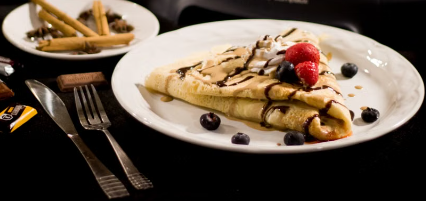
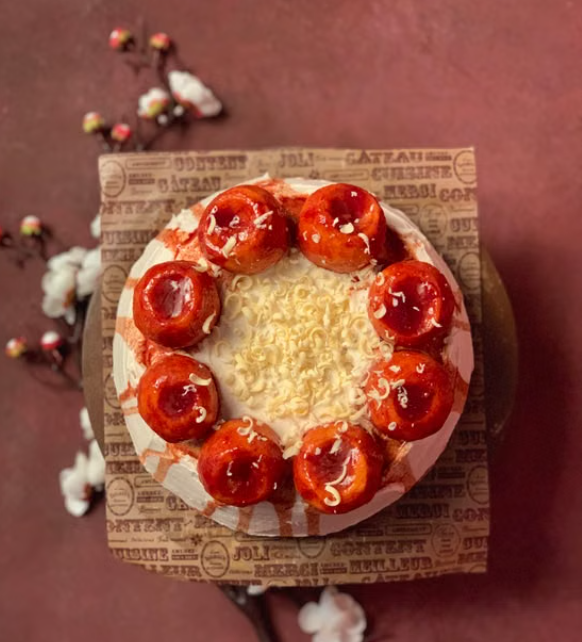
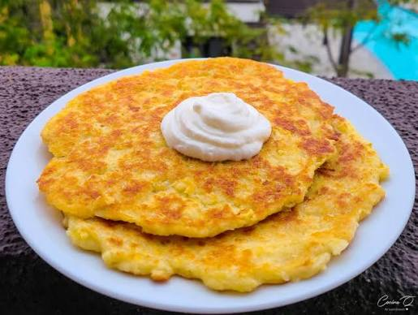
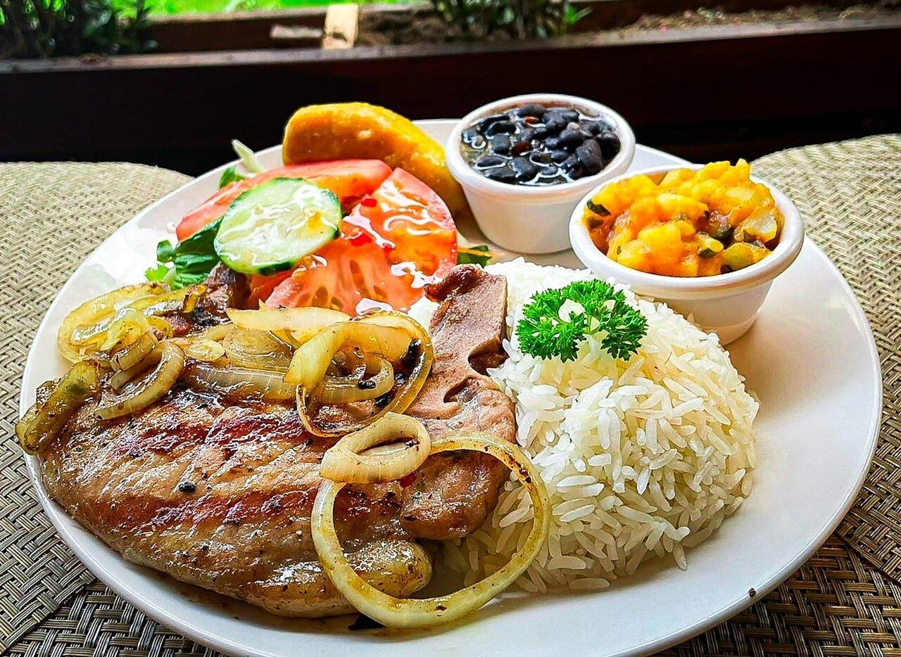
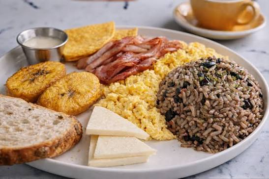
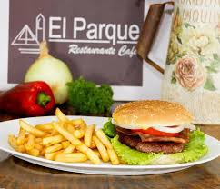
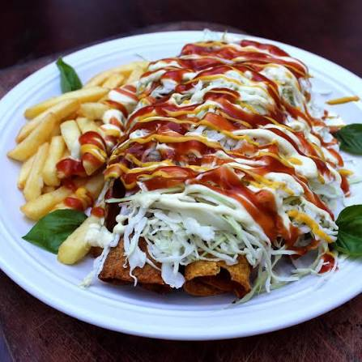

Nuestra galería
Sabores en imágenes
Conoce algunos de los establecimientos, platillos y productos de nuestra guía gastronómica.
Bastos Restaurante


Café Bohemio




Restaurante Mimi


Soda La Central




Restaurante Don Rogelio

